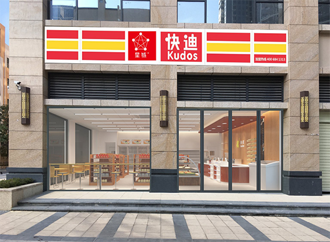

惠州市星链快迪零售服务有限公司
“快迪便利店”是惠州市民营企业100强之一的“惠州市兴勤实业有限公司”于注册成立并全力开发的便利连锁店-惠州市快迪贸易连锁有限公司旗下品牌。通过五年的努力，目前门店总数已达220间。
发展历程:
快迪以“特许加盟”为主要发展模式，继续以标准24小时便利店加盟作为主要发展方向，以“便利、亲切、优质、实惠”为经营理念，以“社区居民、院校师生、商务人士及外来劳工”为主要服务对象，经营人们日常生活必需的食品、副食品、休闲食品、即食食品、日用百货、文具和书报杂志等，并设有传真、复印、代售电话卡、免费加开水、自行车免费打气等多项便民服务项目，并以“六个统一”（即统一形象、统一管理、统一商品、统一培训、统一服务、统一促销）来规范和保障公司的营运体系。良好的行业形态及科学完善的营运管理与广大加盟者真诚合作，共创双赢。
2003年10月，在麦地南路的博美堂、马庄路、河南岸的斑璋湖等三处并非传统商业区的地方，突然冒出了3家店面形象统一，看上去有点类似于麦当劳、肯德基快餐店的店铺。这就是最早的快迪，里面经营的却是一些小到油盐酱醋、针头线脑，大到烟酒副食、日用百货的零售店。
